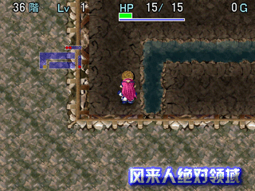
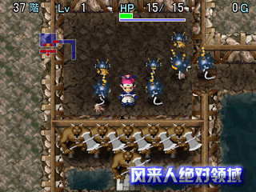

|
风来之西林外传 ～女剑士飞鸟见参～
◆ ムラドの试练图文攻略 ◆
制作：kenyo
『风来人绝对领域』版权所有，禁无断转载！
21F 火炎壁障 ～炎上卷物～
Tips：利用火柱抵挡战车的弓箭，并利用水壶装水来灭火前进。参考步骤：左1步，右上1步，右下1步，右上1步，利用水壶装水，向左上角喷水，读炎上之卷物，左上2步，上1步，再读炎上之卷物，向上喷水，上2步，下楼梯。
22F 软禁亡灵武者
Tips：干掉鬼面武者会出现亡灵武者，如果飞鸟站到鬼面武者死掉的位置，那么亡灵武者就一直不会出现，直至飞鸟离开该位置为止，这样亡灵武者就被软禁了。再让最下方的LV2的地窖玛姆鲁升级成LV3的洞窟玛姆鲁，并利用痛分之杖干掉它提升飞鸟LV，这样就能冲过落石阵了。
参考步骤：左1步，右上1步，向下使用龙炎草干掉鬼面武者，向下1步，空挥19次（最后1次干掉地窖玛姆鲁），右4步，右下2步，左下2步，左4步，下5步，右5步，下6步，左下1步，右上1步，上6步，左5步，上5步，右4步，向左投掷痛分之杖，右上2步，左下1步，左4步，左上1步，下楼梯。
23F 猪猪・怪盗・青蛙
Tips：利用怪盗ペリカンの箱来合成盾和银箭，并向河对岸的青蛙NPC投掷以此引其过河。
参考步骤：右上1步，向右投掷毒草，左上1步，下2步，右上1步，向左投掷发怒之杖，上1步，空挥1次，下3步，穿上怪盗ペリカンの箱，向左上使用特技吸取铁甲之盾，向左使特技吸取银箭，这时被小猪猪撞飞掉出装备，解除穿着怪盗ペリカンの箱的状态，向左3步利用地雷干掉小猪猪，右3步，右上1步，向右投掷盾，待青蛙NPC过河后回收进箱子带在身上，等青蛙箱HP回复1半以上就可穿上过河。
24F 番犬回转盘
Tips:3个番犬之间的距离都不一样，应等待相距最远的2只番犬经过时才好冲出藏身的小房间。装备通过腕轮在水内解除会瞬飞到另一房间。利用饭团向おにぎり系的怪物投掷会令其受到伤害……
参考步骤：上2步，装备通过腕轮，空挥10次，上2步，右1步，上4步，右1步，上6步，左4步，下1步，左5步，下2步，空挥13次，上2步，左3步，上3步，右2步，上3步，右2步，上3步，左8步，下2步，空挥2次，上2步，左5步，下5步，右1步，下6步，右1步，下1步，右3步，空挥1次，左2步，解除通过腕轮，飞到另一房间后向にぎりもとじめ投掷饭团即可干掉它，下楼梯。
25F 斗牛女剑士 ～隧道迷踪～
Tips：很简单的谜题。参考步骤：上1步，向下使用隧道之杖，下5步，向左使用隧道之杖，左5步，向上使用隧道之杖，左1步，向上使用隧道之杖，左1步，向上使用隧道之杖，右7步，上6步，左上1步，向左使用隧道之杖。左5步。
26F 妖眼怪的奇遇 ～火眼金睛修炼大法～
Tips：这个也很简单，首先将木棍与幸福之杖的位置交换，并拾起火种之卷物，然后回到摆放幸福之杖的位置，不要拾起杖，而是直接选“足元”指令对画面右边的ハイパ`ゲイズ使用，接着向左走1步使用火种之卷物就可看到ハイパ`ゲイズ被活活烧死，等火炎退去后就可下楼梯。
27F 人道毁牛2 ～地雷与爆弹粉碎刑～
Tips：必须要让爆弹系怪物ダイキライ在适当位置变为爆发状态而不再移动，并利用其来炸掉至少2头牛战士，最后2头用地雷解决。参考步骤：右上2步，空挥1次，向右使用吹飞之杖，右1步，向右使用吹飞之杖4次，左4步，空挥12次，向右投掷吹飞之杖，右10步，右上1步，右3步，向右上发射大炮之弹，左3步，左下1步，攻击右边的ダイキライ炸死2头牛战士，右上3，右4步踩上地雷炸死最后2头牛战士，右1步下楼梯。
28F 斗牛女剑士2 ～车轮与毒箭齐飞～
Tips：简单的很，只要利用车轮发动毒箭机关让牛战士攻击力降为0，这样就算中了其痛恨一击也只有2点伤害，可以承受其多次痛殴而迅速冲到楼梯。参考步骤：下1步，右上1步，左7步，装备曲折腕轮，向左投掷车轮发动毒箭机关，左下2步，空挥2次，右上1步，左上1步，上2步，右9步，下楼梯。
29F 蚁洞探险
Tips：首先要利用车轮发动圆木机关将蚂蚁撞过另1个岛上，让其掘开岩石开通道路，并且将其引至另一个圆木机关上挡住一方通行机关的出路，这样才能到达楼梯处。
参考步骤：上1步，右下1步，右11步，右上1步，上6步，空挥1次，向左投掷车轮发动毒箭机关，向下走引诱蚂蚁掘开岩石之后马上向上走，以逆时针方向沿路回到刚才有卷物的地方，拾起卷物，向左走踏上一方通行机关并踩上圆木机关被撞至下方，上2步，左上2步，上1步，空挥4次，这时蚂蚁已被引至圆木机关上挡住了一方通行机关的出路，下1步，右下1步，右2步，右下1步踩上圆木机关被撞至一方通行机关上，右4步下楼梯。
30F 虐待番犬
Tips：这个比较麻烦，可能很多人多次尝试也无法突破吧？
参考步骤：下1步，左1步踩圆木机关，左4步，上2步，面向下踩圆木机关，右6步，上11步拾起圣域卷物，此时待HP回复满点之后再向上1步被撞回中间的岛上，下1步，左3步，下3步踩圆木机关（此时HP必须在11点以上），下10步拾起曲折腕轮，上9步，待HP回复满点之后再上一步，右1步踩圆木机关，左10步拾起杂草，下10步被撞回中间的岛上，左5步，上6步，右6步，下1步，右4步，上1步，装备曲折腕轮向上投掷杂草发动圆木机关把番犬撞到左边的小岛上，左下1步，左3步，上1步，左6步，下6步，右4步，右上1步，上1步，待HP回复满点之后右1步踩圆木机关，在地上放置圣域卷物，对番犬殴打90次，右3步拾起鹤嘴镐，右1步踩圆木机关，右5步，下5步，左2步，上1步踩圆木机关，下4步，右1步，下6步，左6步，上1步，左3步，下1步，左1步踩圆木机关，左3步，装备鹤嘴镐掘开岩石，下楼梯
31F 虎王发威
Tips：很简单的谜题。参考步骤：左1步，右2步，左下1步，下1步使用发怒之杖，到达右边的房间之后吃下目药草，装备木锤敲掉所有大岩石机关，再在图示的位置对LV2老虎使用发怒之杖，接着向其投掷木锤解除定身状态。然后空挥3次就可被扔到圆木机关上撞至楼梯处。
32F 转写的秘诀
Tips：关键是转写其他卷物的种类要绝对正确，正解是用转写之卷物转写2个暴睡之物和1个炎上之物。此后的步骤就很简单了，进入地窖玛姆鲁的房间后退回窄道内用空手道解决。进入子供战车的房间后应向下再走一步才使用炎上之卷物，剩下1个子供战车时退回窄道内引诱其走至火柱上。进入火炎入道的房间后应向右再走一步才使用困时之卷物。进入透明怪的房间之后马上使用暴睡之卷物。走到牛战士的房间门口时2头牛战士会苏醒，这时使用1次暴睡之卷物，入房间后再使用1次暴睡之卷物，然后用炎上之卷物就可轻松解决所有牛战士。
33F 机关道
Tips：拾起脚下的车轮，向上走2步再向右投掷车轮利用大落石机关解决“见习饭团怪”，而第2个房间的机关杀伤力不够大，可退回第1个房间用同样的方法解决该怪物，进入第3个房间后向上走1步再向右投掷车轮利用捕兽夹令番犬无法移动。
34F 钱路在何方
Tips：充分利用ガマラ系怪物贪钱的特性，搞出1条钱路让ガマラ系趴在上面以便拦阻“鼻涕虫”的攻击。参考步骤：向上一步（不要拾起钱），向左下投掷金钱，左下1，上1，向左下使用ばぬ先の杖，左下1步，左1步，空挥28次，向左下投掷ばぬ先の杖，左5步踩圆木机关过河。
35F 钝足多边形
Tips：此题有点强行突破的意味。参考步骤：右4步，右下1步，右上1步，左上1步，左下1步，左6步，拾起钝足之杖向右使用，左2步，空手道干掉玛姆鲁，左2步，向左下投掷钝足之杖，左上1步，左下1步，左上1步，左1步，左下1步，左上1步，下1步，下楼梯。
36F 根绝的迷惑
Tips：根绝卷物是不能对くねくねハニ―使用的，否则就找不到交换位置的对象了。解题的关键是将挡住木箭射出路线的くねくねハニ―移开，之后可发动地雷机关炸死上方其中1个くねくねハニ―，剩下的1个就是交换位置的对象了。参考步骤：右上1步，下1步，左5步，左下2步，右下1步，上1步踩圆木机关，上1步，右上1步，右8步，向右投掷根绝之卷物，上1步，空挥8次，向右上投掷场所交换之杖，下楼梯。


37F 人道毁牛3 ～爆弹爆破刑～
Tips：利用爆弹系怪物的爆发炸开墙壁放出牛战士，然后再用已启动爆发状态的爆弹干掉就能过关，但是，爆弹系怪物的位置要把握准确才行。
参考步骤：左8步，左下1步，读落石之卷物，与右边的爆弹怪交换位置，用空手道对付左边的爆弹怪物令其爆发摧毁墙壁，右上2步，向右下使用场所交替之杖。此后的步骤有2种方法解决牛战士，1种是向左上的爆弹怪投掷火炎草使其进入爆发状态，接着等所有的牛战士靠近3个爆弹怪后，殴打左边的爆弹怪一炮炸尽！第2种方法是吃下火炎草干掉左上的爆弹怪升级，然后等牛战士聚成如图所示的密合形状时再殴打左边的爆弹怪一炮炸尽，此法难度较高，推荐第1种方法。

38F 洞窟玛姆鲁之惨死
Tips：很简单的谜题，相信大家都是1次就过的吧。参考步骤：上1步，下3步，向右对老虎使用发怒之杖，右1步被扔到弹簧上弹到另一房间，右1步，向右上使用一时忍耐之杖，吃下无敌草，右2步，被吹飞激光射中撞死洞窟玛姆鲁，下楼梯。
39F 战火纷飞
Tips：利用半速的子供战车炸开墙壁，并躲避其大炮轰击接近楼梯处，有2种方法破关，一种是引牛战士离开楼梯，另一种就是不惊动牛战士直接冲上楼梯，下面介绍的是后一种攻略法。参考步骤：右上1步，上3步，空挥1次，下1步，上1步，空挥1次，下1步，上1步，下1步，空挥1次，上1步，空挥1次，下1步，空挥1次，上1步，下1步，空挥1次，左下1步，左4步，左上2步，左1步，左上1步，下楼梯。
40F 美味烧饭团量产法
Tips：有没有发现，以前凡个位数为0的谜题都是比较难过的，但此题就不同了，个人认为很简单，实在对不起那个0啊！废话少说，此题的解法是我原创的，不同于日文西林网站上的公版解法^_^，而且还涉及到可以在カカ・ル`の试练迷宫（机关迷宫）内应用的一个高级技巧，各位一定要看仔细了！
参考步骤：拾起地上的车轮、目药草、杂草、青铜甲之盾，首先必须知道地雷和デロデロの的确切位置，可使用目药草查看。将杂草依图所示放在デロデロの机关的右边（此为关键步骤，目的是使投掷车轮时不会掉到该位置，详见“落物位置定律”），这时去右边的房间引诱那3个MM怪物，之后返回第1个房间站在デロデロの机关左边的位置，待MM怪物走至机关上时向右投掷车轮将其变成馊饭团，不管怎样投掷，车轮必定会回到飞鸟站的位置，这样就得到了3个馊饭团。拾起所有道具去踩一次地雷，馊饭团全部变成烧饭团，可用来回复HP。装备青铜甲之盾，待HP回复满之后去到最右边的圆木机关，以自左下至右上的方式踩该机关会被撞至楼梯处，这时弓箭手会进行阻击，HP不够时用烧饭团回复。
kenyo解说：为什么车轮会一直回到飞鸟站的位置呢，这涉及到一个高级技巧――“落物位置定律”！
T R P Q S
M F D E L
K C A B J
O I G H N
Y W U V X |
如上图所示，A为基准点，也就是道具本来要掉落的位置，但A位置被占据时，就掉到B位置，B位置被占据就落到C位置，依次类推，范围是以基准点为核心的3格内（别跟我说你不知道英文字母的次序，我打！）。以本题为例子，由于车轮掉出的次序判定要优先于怪物变成的馊饭团，本来车轮要落在A位置，但A、B位置都被占据了，顺理成章就会落到C位置――飞鸟站的位置，这为连续将怪物变成馊饭团提供了便利条件，这下大家明白这个技巧的原理了吧？补充：利用怪盗合成时，杀死怪盗的位置就是掉出道具的基准点A；打碎壶时，壶碎的位置就是掉出道具的基准点A，等等等等，不胜枚举！
|